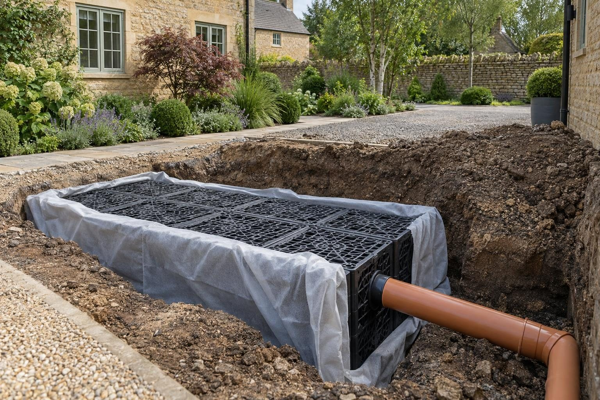

Driveway drainage in Stamford
Stamford's limestone often takes a soakaway well, but cellars, rubble fill and the Welland flood plain mean we test every site first.
In Stamford a channel drain across a typical driveway or garage entrance costs about £1,000–£1,800 installed, or £120–£200 per metre for a heavy-duty, vehicle-rated channel. On the limestone, a percolation test often supports a compact soakaway, which is then sized and priced from the result. In the conservation area, though, the Article 4 direction can bring planning into play if the drive surface itself has to change.
- Channel drain
- £120–£200 per metre
- Planning
- Not needed; no water to the road
- Ground
- Limestone; usually free-draining
- Guarantee
- 5 years, in writing
Our 2026 guide prices, all in. Your fixed price comes in writing after the site visit. Council fees checked October 2026.
Driveway drainage in Stamford
Stamford has an advantage most towns we work in do not: much of it sits on Lincolnshire Limestone with well-drained loamy soils, so a properly sized soakaway often works well. That makes drive drainage here less about fighting the ground and more about getting the water to the right place. When a Stamford drive puddles, the cause is usually falls that have gone wrong, a base that has sunk, or an outlet that was never there. Rutland Driveways & Landscaping finds which it is before recommending a channel drain.
The town's buildings shape the job. The Georgian centre is limestone under Collyweston slate, with more than 600 listed buildings, and its frontages are often small and visible from the street. The Victorian streets along Rutland Terrace, Empingham Road, Tinwell Road, Ryhall Road and Casterton Road have longer drives that have often been patched. The 1920s houses around Melbourne Road and New Cross Road, and the new estates growing on the north side of town, each bring their own mix of falls, garages and outlets.
What makes Stamford different
Free-draining limestone is the norm, but not everywhere. Old cellars, rubble fill and the Welland flood plain change the picture locally, so a soakaway that suits one street can be wrong on the next, and we test before we design. Stamford was the first conservation area in Britain, and since December 2018 an Article 4 direction across it removes permitted development for hard surfaces facing a road. A channel drain on its own is drainage work, but if the drive surface needs relaying, permission is likely, and the council favours York stone, granite setts and natural materials.
A typical Stamford job is a Victorian or 1920s house where the drive falls towards the front door or garage. We set a heavy-duty channel across the low point, often run to a soakaway sized from a percolation test in the limestone, and correct the falls. In the conservation area, the channel is finished to sit neatly within setts or natural stone.
You can check any address on the Environment Agency flood map.
Sources: Stamford Article 4 direction · Stamford conservation area appraisal.
Permissions in Stamford
- PlanningDrainage work on your own driveway does not need planning permission, but surface water must not go into the foul sewer or onto the road, and any new connection to a public sewer needs the water company's approval. Stamford's Article 4 direction brings some work facing a road, footpath or open space under planning control, so we check it against your address first. Planning Portal: paving your front garden
- Design and priceWe measure up, check the ground and the planning position, and give you one fixed written price.
Rules checked October 2026.
What you get in Stamford
- Percolation test to confirm the limestone drains, and to spot rubble fill or cellars
- Channel finishes that sit within setts and natural stone in the conservation area
- Article 4 implications checked before any surface is lifted
- Heavy-duty, vehicle-rated channel drains bedded and haunched in concrete
- Soakaways and crate systems sized from a percolation test
- Falls corrected so water goes where it is meant to
The specification
- Percolation test and survey of the falls
- Channel set in a concrete bed and haunch
- Pipework to a soakaway, crate or approved outlet
- Surface cut and made good to match
- Gratings fixed and tested with water
- Five year workmanship guarantee in writing

“Really pleased with my new driveway. Beautifully finished, friendly professional workmen, would definitely recommend and will be using them again for the garden once other renovations complete.”
Driveway — Google review
“Absolutely great guys, job was done in good time and looks brilliant. No complaints, the driveway is immaculate. More work in the near future, thanks again!”
Driveway — Google review
Everything else we do here


Driveway drainage in Stamford: questions
How much is driveway drainage in Stamford?
Does the Stamford Article 4 direction affect drainage?
Our house is on limestone. Why does the drive still flood?
We are near the River Welland. Will a soakaway still work?
Driveway drainage nearby
Request a site visit in Stamford
We measure up, check levels and drainage, and send a written proposal with the build-up, the programme and one whole price. No pressure and no follow-up sales calls.